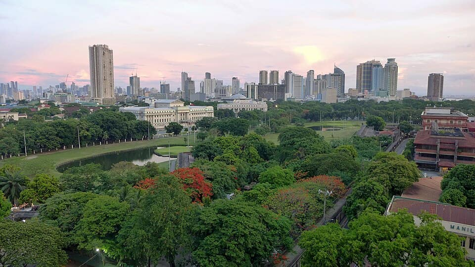
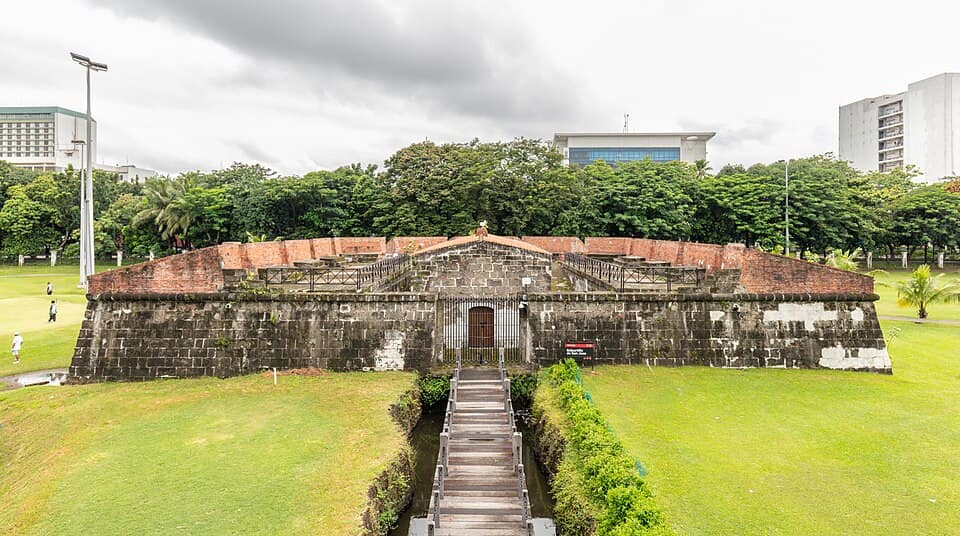
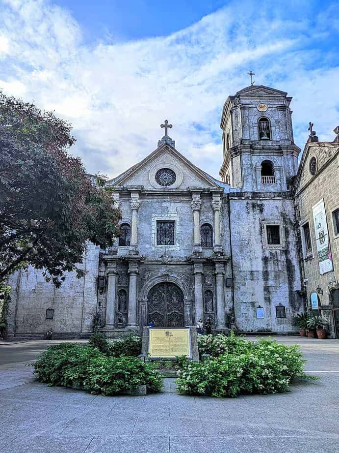

Philippines
Manila
Philippines — a whole city, district by district, sourced
3 places · 1 area · every one sourced, pinned and status-checked · last checked . Ordered by tier, then by number of named sources. How we choose
Intramuros

Start with

Manila 3 places · area 1 of 1

Photo: Diego Delso · CC BY-SA 4.0 · Wikimedia Commons (resized) 1 Must see within Manila
Intramuros
The 16th-century Spanish walled city — cobbled streets, bastions and Fort Santiago, the historic core of Manila.
Look for Walled colonial city
Intramuros, Manila, Philippines
Recommended by ,

Photo: Johngaje92 · CC BY-SA 4.0 · Wikimedia Commons (resized) 2 Must see within Manila
San Agustin Church
The oldest stone church in the Philippines (1607) and a UNESCO 'Baroque Churches of the Philippines' World Heritage site.
Look for UNESCO baroque church
General Luna Street, Intramuros, Manila, Philippines
Recommended by ,
-
3 Worth the detour within Manila
Rizal Park (Luneta)
The historic seaside park at the site of national hero Jose Rizal's execution, marked by the Rizal Monument.
Look for Historic park
Ermita, Manila, Philippines
Recommended by ,
How we choose
Every place is recommended by named sources (review-aggregator star ratings never count as the recommender), pinned to its door from a published coordinate, and status-checked. Closed places stay, flagged, so you know they’re gone.
- Must see
- The places to plan a visit around — graded within each area, not across the city.
- Worth the detour
- Strong picks, worth going out of your way for.
- Deep cut
- For the curious: smaller, odder, more local.
Within each area, places are ordered by tier, then by number of named sources — never by popularity. Numbers on the cards match the pins on the map. No ratings, prices or opening hours are shown, because the guide doesn’t hold verified ones.
3 sights and 0 places to eat in the city of Manila, each traceable to the source that named it (Michelin, local news & vetted local/viral creators). Renders in soft pastel, light or dark.
Take Manila with you
Every place, its sources, the Guidebook and the photos at a small size. Map tiles are not saved: offline, the map shows our own pin schematic and every place stays listed.